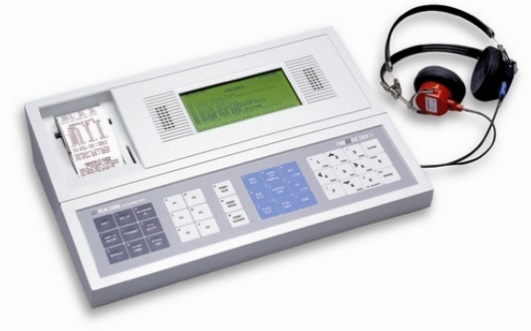

The purpose of this guide is to assist Cority users in transferring test results from external devices into Cority using one of the Cority Device Import Engines—the Spirometric Import Engine, the Audiometric Import Engine, or the Vision Import Engine.The document includes instructions on how to download and configure a Device Import Engine and connect an external device to your computer to enable the successful transfer of data. There are also sections on how to set up the transfer of the data and how to verify that test results have been transferred successfully.
Finally, there is a troubleshooting section that describes the common reasons test results are rejected. The troubleshooting section includes tips for identifying common issues and information on how to resolve them.
Before proceeding with the instructions below please set up the device to be used for testing by following the instructions in the device’s user manual.